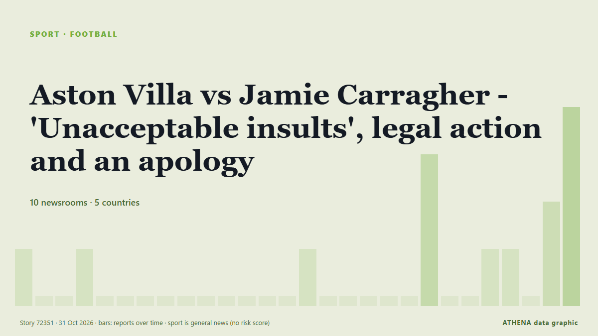

الرياضة
تُعرض العناوين بالإنجليزية كما نُشرت.

كرة القدمAston Villa vs Jamie Carragher - 'Unacceptable insults', legal action and an apology
Jamie Carragher has been pushing a narrative that Unai Emery should leave Aston Villa for Manchester United if given the chance, and from there, things have escalated. من Birmingham Mail
| 18 أكتوبر | 1 |
|---|---|
| 19 أكتوبر | 4 |
| 20 أكتوبر | 0 |
| 21 أكتوبر | 9 |
| 22 أكتوبر | 13 |
| 23 أكتوبر | 15 |
| 24 أكتوبر | 10 |
| 25 أكتوبر | 31 |
| 26 أكتوبر | 46 |
| 27 أكتوبر | 58 |
| 28 أكتوبر | 55 |
| 29 أكتوبر | 58 |
| 30 أكتوبر | 87 |
| 31 أكتوبر | 14 |
Michael Carrick confirms Bruno Fernandes will remain Manchester United captain
Manchester United captain Bruno Fernandes turned on head coach Michael Carrick after one of the club's most humiliating nights in European history. من MyJoyOnline
Russia’s Shnaider through to final of 2026 WTA Toray Pan Pacific Open in Tokyo
The Russian tennis player is now set to face off in the final against Canada’s Leylah Fernandez. من TASS (English)
BOC President Meets Bulgarian Athletes in Dakar Olympic Village
A Namibian team of 12 athletes will represent the nation at the first ever Youth Olympic Games in Africa, which kick off in Dakar, Senegal, tomorrow. من The Namibian
Senegal kicks off Youth Games, Africa’s first ever Olympics
Dakar is hosting around 2,665 young competitors aged 14 to 17 from around the world, who will compete in 25 sports and 153 medal events. من Free Malaysia Today
Djokovic faces ATP Finals battle after loss in Basel
Returning to Basel for the first time in 15 years, Novak Djokovic, lost 6-7(4), 7-5, 7-6(5) to German veteran Jan-Lennard Struff in Thursday’s second round, his first defeat in nine meetings. من Free Malaysia Today
Organisers reveals how Kane edged Mbappe to Ballon d’Or win
Bayern Munich striker Harry Kane has beaten Barcelona youngster Lamine Yamal and Real Madrid forward Kylian Mbappé to emerge as the best player of the 2025-2026 season in Spanish newspaper Marca's… من Vanguard
England heading out of the World Cup despite beating Papua New Guinea
The story of England’s World Cup exit - despite their win over Papua New Guinea. من Yorkshire Post
Kenya: Ruto - Why Bayern V Ajax in Nairobi Is Perfect Tribute to Former PM Raila Odinga
[Capital FM] NAIROBI -- President William Ruto believes there could be no better way to honour former Prime Minister Raila Odinga than a blockbuster tie between Bayern Munich and Ajax at a stadium… من AllAfrica
Azerbaijan to face Afghanistan in final match at FIFA U-15 World Cup in Baku
Azerbaijan will play its final match at the FIFA U-15 World Cup and Festival, being held in Baku, today. من AzerNews
Russell admits absence of rivalry because he cannot match Antonelli
The Mercedes pair have not clashed in races as many previous championship rivals have done, which often resulted in a breakdown in personal relations. من Free Malaysia Today
Arteta tells Dowman Premier League is 'not Disneyland' after ban upheld
LONDON: Arsenal manager Mikel Arteta said teenager Max Dowman must learn to cope with the demands of elite football after the winger’s red card in the League Cup defeat at fourth-tier Fleetwood Town… من New Straits Times
Chase sparks Bangladesh collapse as West Indies on top in Mirpur Test
West Indies' Royston Chase forces collapse as Bangladesh slump to 79-6, a lead of 106 runs, on day three of first Test. من Al Jazeera English
Everton beat Newcastle to set up League Cup quarter-final with Fleetwood
Everton advanced to the League Cup quarter-finals with a 3-1 victory over Newcastle United on Thursday, setting up a clash against fourth-tier side Fleetwood Town. من Cyprus Mail
Africa Cup of Nations to maintain 2-year cycle after CAF U-turn
The Africa Cup of Nations will maintain its two-year cycle after a U-turn from the Confederation of African Football. من Africanews (English)
FIFA U15 World Cup & Festival: Kyrgyzstan finishes 52nd among 189 teams
Kyrgyzstan's U15 national football team lost to Guatemala in the match for 51st place at the FIFA U15 World Cup & Festival in Azerbaijan, the official account… من 24.kg (English)
Lancashire exit came as shock, says Anderson
Dubai: England cricket legend James Anderson is expected to bring his playing career to an end after Lancashire decided against offering him a new contract for the 2027 season. من Gulf News
Rybakina clinches year-end top ranking with Tokyo win
Elena Rybakina beat fellow Kazakh Yulia Putintseva 6-2 6-3 in the second round of the Pan Pacific Open in Tokyo on Thursday to secure the year-end world number one ranking for the first time, more… من Cyprus Mail
Zverev 'on top of the world' after securing No. 1 ranking
Long seen as tennis’ nearly-man, Alexander Zverev has enjoyed a stellar 2026, breaking his Grand Slam title drought by winning the French and US Opens. من Free Malaysia Today
Sharp-shooting Dream beat Valkyries 80-69 to force Game 7 in WNBA Finals
Atlanta Dream made sure the series went the distance with an 80-69 victory over the visiting Golden State Valkyries. من Al Jazeera English
South Africa unveils Durban as bid city for 2036 or 2040 Olympics
South Africa named the coastal city of Durban as its preferred candidate to host either the 2036 or 2040 Olympic Games. من Free Malaysia Today
Verstappen leaves door open to Le Mans drive with Ricciardo
MAX VERSTAPPEN said a future Le Mans entry with former Red Bull teammate Daniel Ricciardo could appeal, but only if it came with the preparation needed to properly challenge for victory. من New Straits Times
Kiss backs 'hungry' Beale to push for Wallabies game time
SYDNEY: Wallabies head coach Les Kiss backed Kurtley Beale on Friday to push for a place in the Australian team during the Nations Championship after the veteran star’s shock recall. من New Straits Times
Iran wins Greco-Roman wrestling World Championship title
Tehran, IRNA – Iran’s national Greco-Roman wrestling team won the early overall title at the World Championships in Kazakhstan, with three gold, two silver and two bronze medals. من IRNA (English)
Carrick fights for Man Utd job, Arsenal face Liverpool test
Michael Carrick stays in charge ahead of a vital trip to face Chelsea as the Gunners look to erase the embarrassment of their League Cup loss at Fleetwood. من Free Malaysia Today
Bournemouth manager's message to Michael Carrick after Manchester United defeat
Bournemouth manager Marco Rose felt sympathy for Michael Carrick as he moved closer to the brink at Man Utd. من Manchester Evening News
Perez says Cadillac deal will be his last Formula One contract
MEXICO CITY: Sergio Perez said on Thursday that his newly announced contract extension with Cadillac will be his last in Formula One, as the Mexican prepares to mark his 300th Grand Prix start in… من New Straits Times
Milwaukee Brewers Win First World Series Title, Beating Rays 4-1
The Milwaukee Brewers captured their first World Series championship in franchise history on Wednesday, Oct. من Colombia One
Arsenal lose appeal against Dowman’s red card in shock Fleetwood defeat
Teenage rising star Max Dowman was sent off for kicking out at Harrison Neal following a strong challenge in the 85th minute of the League Cup tie. من Free Malaysia Today
Saudi Arabia to Kick Off 2027 Asian Cup Against Palestine in Riyadh
The 24-team Asian Cup will run from Jan 7 to Feb 5, with the opening match and final at Riyadh's King Fahd Sports City Stadium. من Free Malaysia Today
Real Madrid beat Barcelona 2-1 in La Liga Clasico
Kylian Mbappe struck twice to earn Jose Mourinho's Real Madrid a 2-1 Clasico victory over La Liga leaders Barcelona on Sunday at Camp Nou, cutting the gap to three points. من Vanguard
Osaka says she’ll return stronger after latest low, Tokyo exit to Pohankova
Four-time Grand Slam champ Naomi Osaka loses 6-3, 7-5 to 18-year-old Slovak Mia Pohankova, ranked 144 in the world. من Al Jazeera English
Foreign Powers and Investors in Puerto Rico 2026
A guide to the outside powers shaping Puerto Rico in October 2026: grid operators, drugmakers, bondholders, federal agencies and the diaspora. من The Rio Times
China says Beijing takes football star Mbappe’s apology ‘seriously’
Kylian Mbappe apologize for hurting people in China after circulation of video showing him saying his favorite meme was one depicting him as Chinese leader Mao Zedong. من Anadolu Agency (English)